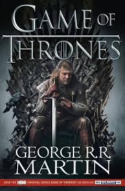

"When you play the game of thrones, you win or you die." – *No pressure, right?* 👀
People **fight over an uncomfortable-looking chair** while a **dragon queen, ice zombies, and lots of family drama** unfold. 🏰🔥❄️ Don't get attached to anyone – because **they might not be alive by the next chapter.**
✔️ If you enjoy **political backstabbing, swords, and an extreme lack of plot armor.**
✔️ If you like books where **dragons and zombies coexist in the same universe.** 🐉❄️
✔️ If you're ready for **one of the most detailed, epic, and occasionally painful stories ever written.**
(*Warning: May cause attachment issues and an obsession with medieval politics. 👑)
"A Lannister always pays his debts." – Every Lannister, ever ğŸ¦
"Winter is coming." – Every Stark, every five minutes ❄️
"Dracarys." – Daenerys Targaryen 🔥